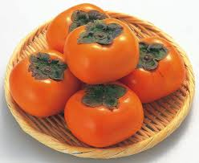
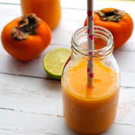
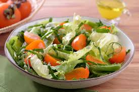
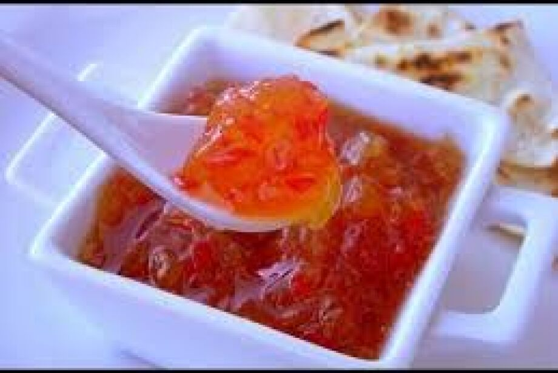

O caqui é um fruto originário do leste da Ásia, especialmente da China, onde já era cultivado há mais de dois mil anos e valorizado tanto como alimento quanto por sua capacidade de conservação, já que podia ser consumido fresco ou seco. Com o tempo, seu cultivo se expandiu para países vizinhos, como o Japão e a Coreia do Sul, onde surgiram diversas variedades selecionadas por agricultores ao longo dos séculos, buscando frutos mais doces, menos adstringentes e com diferentes formatos e cores. O nome científico mais comum do caqui é Diospyros kaki, sendo que “Diospyros” significa “alimento dos deuses”, mostrando a importância simbólica e cultural desse fruto. No século XIX, o caqui começou a se espalhar para outras partes do mundo, chegando à Europa e aos Estados Unidos, onde passou a ser cultivado em regiões de clima adequado. No Brasil, sua introdução ocorreu no início do século XX com a chegada de imigrantes japoneses, que trouxeram mudas e técnicas de plantio, contribuindo para o desenvolvimento da produção nacional, especialmente no estado de São Paulo, que hoje é um dos principais polos produtores. O caquizeiro é uma árvore de porte médio, podendo atingir até cerca de 15 metros de altura, com folhas que caem no outono e frutos geralmente de coloração alaranjada ou avermelhada. Além disso, o caqui possui alto valor nutricional, sendo rico em vitaminas, fibras e antioxidantes, e carrega significados culturais importantes em países asiáticos, como prosperidade e boa sorte, o que reforça sua relevância histórica e simbólica ao longo do tempo.

O plantio do caqui deve ser feito em regiões de clima mais ameno, pois a planta se desenvolve melhor em locais com estações bem definidas, especialmente com invernos leves e verões não muito extremos; no Brasil, ele se adapta muito bem em áreas do Sudeste e Sul, com destaque para São Paulo. O ideal é plantar mudas já formadas, pois o cultivo por sementes não garante frutos de boa qualidade, e o solo deve ser fértil, bem drenado e rico em matéria orgânica. A época mais indicada para o plantio é durante o período de dormência da planta, geralmente no inverno (entre junho e agosto no Brasil), quando o caquizeiro está sem folhas, o que facilita o enraizamento e reduz o estresse da muda. Após o plantio, é importante manter regas regulares, principalmente nos primeiros meses, sem encharcar o solo. O caquizeiro começa a produzir frutos normalmente entre 3 e 5 anos após o plantio, e a colheita costuma ocorrer no outono, entre março e maio, dependendo da variedade; nessa fase, os frutos devem ser colhidos com cuidado para evitar danos, já que são sensíveis. Além disso, práticas como poda anual e adubação ajudam a manter a produtividade e a saúde da planta, garantindo frutos de melhor qualidade ao longo dos anos.
A floração do caquizeiro ocorre geralmente na primavera, após o período de dormência no inverno, quando a planta volta a produzir folhas e inicia seu ciclo reprodutivo; no Brasil, isso costuma acontecer entre os meses de setembro e novembro, variando um pouco conforme o clima da região, como no estado de São Paulo. As flores do caqui são pequenas, de coloração creme ou amarelada, e podem ser masculinas, femininas ou hermafroditas, dependendo da variedade da planta. Em muitos casos, os caquizeiros cultivados possuem flores femininas que conseguem desenvolver frutos mesmo sem polinização, em um processo chamado Partenocarpia, o que explica por que alguns caquis não possuem sementes. Quando ocorre a polinização, geralmente feita por insetos, os frutos podem apresentar sementes e até mudanças no sabor e na textura. A floração é uma fase muito importante, pois dela depende a quantidade e a qualidade da produção, sendo influenciada por fatores como clima, disponibilidade de água e nutrientes, além dos cuidados com poda e manejo da planta.
| Nutriente | Quantidade |
|---|---|
| Calorias | 70 kcal |
| Carboidratos | 18 g |
| Fibras | 3 g |
Bata 2 caquis, 1 banana e leite no liquidificador.

Misture folhas verdes, caqui e azeite.

Cozinhe caqui com açúcar e limão até engrossar.

kuhnbrasil/ principais caracteristicas e beneficios do caqui
SESI Alimente-se Bem/ Caqui: fruta da estação, história, benefícios à saúde e receitas